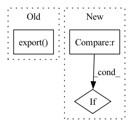

Pattern ID :15871
Before Change
model_path = output_dir.joinpath("model.onnx")
quant_model_path = generate_identified_filename(model_path, "-quantized")
self.export( model_path)
if self.quantization_approach == ORTQuantizationMode.DYNAMIC:
quantize_dynamic(
model_path,
quant_model_path,After Change
model_path = output_dir.joinpath("model.onnx")
self.export(model_name_or_path, model_path, feature=feature, **kwargs)
elif self.onnx_config is None and self.quantization_approach == ORTQuantizationMode.STATIC:
if config is None :
raise ValueError(
"A configuration `config` associated to the model must be provided when applying static "
"quantization on a pre-existing ONNX model."In pattern: SUPERPATTERN
Frequency: 4
Non-data size: 3
Instances Fragment ID: 53648850
Project Name: huggingface/optimum
Commit Name: 4e571292cac85460b01916bd434c5f1d9f972fcd
Time: 2022-01-20
Author: 80481427+echarlaix@users.noreply.github.com
File Name: optimum/onnxruntime/quantization.py
M Class Name: ORTQuantizer
N Class Name: ORTQuantizer
M Method Name: fit(5)
N Method Name: fit(2)
M Parent Class:
N Parent Class:
M File Name: optimum/onnxruntime/quantization.py
N File Name: optimum/onnxruntime/quantization.py
M Start Line: 163
M End Line: 177
N Start Line: 190
N End Line: 232
Before Change
self.model = model
input_names = [ "actual_input_1" ]
torch.onnx.export( self.model, dummy_inputs, "model.onnx", verbose=True, input_names=input_names, opset_version=12)
SymbolicShapeInference.infer_shapes("model.onnx", "shape_infer.onnx")
onnx_model = onnx.load("./shape_infer.onnx")
self.dace_model = ONNXModel("dace_model", onnx_model)After Change
self.model = model
self.sdfg = None
if dummy_inputs is not None :
self.initialize_sdfg(dummy_inputs)
def initialize_sdfg(self, dummy_inputs): Fragment ID: 53648851
Project Name: spcl/daceml
Commit Name: cb700ea4ccaba3a8bfcb6803a25a26a9e853393e
Time: 2020-09-08
Author: shigang.li@inf.ethz.ch
File Name: daceml/pytorch/module.py
M Class Name: DACEModule
N Class Name: DACEModule
M Method Name: __init__(3)
N Method Name: __init__(2)
M Parent Class: nn.Module
N Parent Class: nn.Module
M File Name: daceml/pytorch/module.py
N File Name: daceml/pytorch/module.py
M Start Line: 15
M End Line: 24
N Start Line: 16
N End Line: 20
Before Change
self.onnx_model_path = output_dir.joinpath("model.onnx")
self.optim_model_path = generate_identified_filename(self.onnx_model_path, "-optimized")
self.export( self.onnx_model_path)
config = self.model.config
model_type = getattr(config, "model_type")
onnx_config_defined = OnnxConfigManager.check_supported_model(model_type)
num_heads = getattr(config, OnnxConfigManager.get_num_heads(model_type)) if onnx_config_defined else 0After Change
self.onnx_model_path = output_dir.joinpath("model.onnx")
self.export(model_name_or_path, self.onnx_model_path, feature=feature, **kwargs)
config = self.model.config
elif config is None :
raise ValueError(
"A configuration `config` associated to the model must be provided when a pre-existing ONNX model is "
"provided." Fragment ID: 53648852
Project Name: huggingface/optimum
Commit Name: 4e571292cac85460b01916bd434c5f1d9f972fcd
Time: 2022-01-20
Author: 80481427+echarlaix@users.noreply.github.com
File Name: optimum/onnxruntime/optimization.py
M Class Name: ORTOptimizer
N Class Name: ORTOptimizer
M Method Name: fit(5)
N Method Name: fit(2)
M Parent Class:
N Parent Class:
M File Name: optimum/onnxruntime/optimization.py
N File Name: optimum/onnxruntime/optimization.py
M Start Line: 165
M End Line: 203
N Start Line: 193
N End Line: 263
Before Change
model = MyModel()
torch.onnx.export( model, torch.rand(1, 10, 24, 24), "./data/MyModel.onnx", training=torch.onnx.TrainingMode.TRAINING)
// Load the model
onnx_model = onnx.load("./data/MyModel.onnx")
After Change
not_expected_names = ["conv0"]
for node in onnx_model.graph.node:
if node.op_type == "Conv" :
assert node.name in expected_conv_names
actual_node_names = [node.name for node in onnx_model.graph.node] Fragment ID: 53648840
Project Name: quic/aimet
Commit Name: 42a20c7294e616586cd5e51b45dc10973228080e
Time: 2021-04-23
Author: quic_akhobare@quicinc.com
File Name: TrainingExtensions/torch/test/python/test_onnx_utils.py
M Class Name: TestOnnxUtils
N Class Name: TestOnnxUtils
M Method Name: test_onnx_export(1)
N Method Name: test_onnx_export(1)
M Parent Class:
N Parent Class: unittest.TestCase
M File Name: TrainingExtensions/torch/test/python/test_onnx_utils.py
N File Name: TrainingExtensions/torch/test/python/test_onnx_utils.py
M Start Line: 225
M End Line: 240
N Start Line: 251
N End Line: 269